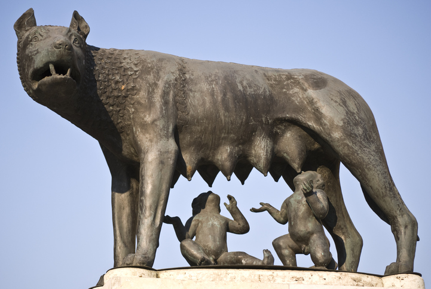

La antigua Roma
La historia de Roma es la de una ciudad-estado que comenzó por dominar las ciudades vecinas, luego los territorios más cercanos y finalmente ocupó todo el mundo mediterráneo formando el imperio más grande de la antigüedad, creando una sólida cultura y extendiéndola a todos sus dominios.
Rómulo y Remo
La leyenda dice que dos hermanos gemelos, Rómulo y Remo, hijos de la princesa Rea Silvia y del dios Marte, siendo muy pequeños fueron dejados en una canasta flotando en el río Tiber para ser salvados de la ambición de su tío, que quería usurpar el trono. Una loba los vio, los salvó y los crió amamantándolos como a sus propios hijos. Luego fueron encontrados por una pareja de pastores. Ya adultos se vengaron de su tío y fundaron Roma. Pero la ambición de poder los separó y pelearon entre ellos. Venció Rómulo y se convirtió en el primer rey de Roma.
Los orígenes
Entre los siglos VIII y VII antes de Cristo, ligures y latinos crearon aldeas en el centro de la actual Italia y formaron la Liga del Septimontium, por los siete montes que había en la región. Estas aldeas autónomas darán origen a la ciudad de Roma.
Cómo era su organización social
En los primeros tiempos, la sociedad romana estaba dividida entre los patricios, los clientes, los plebeyos y los esclavos. Los patricios eran los más poderosos, grandes propietarios de tierras. Eran los únicos «ciudadanos» romanos, podían votar y ser elegidos para cargos públicos y religiosos. Los clientes eran extranjeros que se ponían bajo la protección de un patricio, recibiendo ayuda económica y protección judicial. El cliente pagaba estos servicios con trabajo y participando en la guerra junto a su protector. Las familias patricias se enorgullecían de tener grandes clientelas.
Los plebeyos eran los miembros de la plebe (el pueblo). Este grupo social estaba constituido por los extranjeros y los clientes que habían dejado de gozar de la protección de los patricios. Eran hombres libres pero no ciudadanos. Estaban excluidos de la vida política y religiosa, y les estaba prohibido casarse con miembros del patriciado.
Los esclavos eran prisioneros de guerra. Se dedicaban a las tareas más pesadas y carecían de todo derecho.
¿Cómo era su organización política?
En un principio Roma fue una ciudad-estado monárquica. El rey era elegido por una asamblea y su cargo era vitalicio, pero a su muerte el poder volvía al estado. El Senado designaba un rey provisorio entre sus miembros hasta la elección de un nuevo rey. Los jefes de las familias patricias integraban el Senado, institución que asesoraba al rey en todas sus actividades y decisiones. La asamblea estaba compuesta exclusivamente por ciudadanos propietarios. Tenía funciones legislativas, judiciales y elegía al rey.
La religión
En sus orígenes los romanos adoraban a una gran cantidad de dioses vinculados a las fuerzas de la naturaleza. Al recibir la influencia de otros pueblos, fueron incorporando nuevas deidades. El aporte más importante fue el de los griegos. Los romanos adoptaron los dioses griegos y les dieron nombres latinos. Los más importantes fueron: Júpiter, dios supremo, equivalente al Zeus griego; Juno, esposa de Júpiter, diosa del matrimonio, como la griega Hera; Minerva, diosa de la sabiduría, inspirada en Atenea; Marte, dios de la guerra, como Ares. También estaban las divinidades caseras: cuando alguien moría se transformaba en un lar, un penate o un genio. El lar vigilaba la casa, el penate se ocupaba de que no faltara la comida y el genio era una especie de ángel de la guarda de cada miembro de la familia. La religión estaba muy relacionada con la vida política. Los sacerdotes determinaban cuáles eran los días fastos (buenos) y nefastos (negativos) en los que no podía realizarse ningún acto público. Existía también una religiosidad privada, celebrada en las casas y dirigida por los jefes de familia en torno al hogar, fuego que siempre debía permanecer encendido.
Evolución histórica
La monarquía romana duró desde el año 753 hasta el año 509 antes de Cristo, cuando una revolución terminó con este sistema. Los últimos reyes fueron etruscos que habían conquistado Roma y dejaron una notable influencia cultural, religiosa y política. A partir del 509 a. C. Roma se convirtió en una república, sistema que regirá durante cinco siglos hasta la proclamación del Imperio a fines del siglo I a. C. En sus inicios la república fue aristocrática pero evolucionó gracias a las luchas de los plebeyos, hacia formas claramente democráticas, en lo político, pese a que se mantenían las enormes diferencias sociales y económicas. La república sobrevivió a innumerables crisis sociales y económicas, pero finalmente acabó por derrumbarse tras cruentas disputas internas y se transformó en un Imperio absolutista a partir del «principado» de Augusto en el año 27 a. C. Con él comenzó el período denominado Alto Imperio que se extendió hasta el año 192 d. C., cuando el emperador Cómodo fue derrocado por una revuelta militar. Se produjo entonces la llamada crisis del siglo III que dio lugar al Bajo Imperio que comenzó en el año 284 con Diocleciano. El emperador Teodosio dispuso en su testamento que el Imperio fuera dividido entre sus hijos. Así a partir de entonces hubo un Imperio Romano de Occidente y otro de Oriente. Este período finaliza con la caída del Imperio de Occidente en manos de los invasores bárbaros en el año 476.